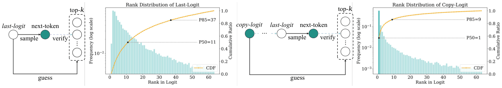
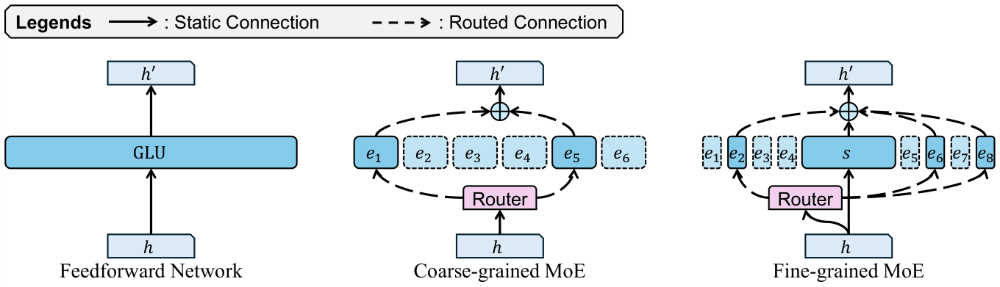
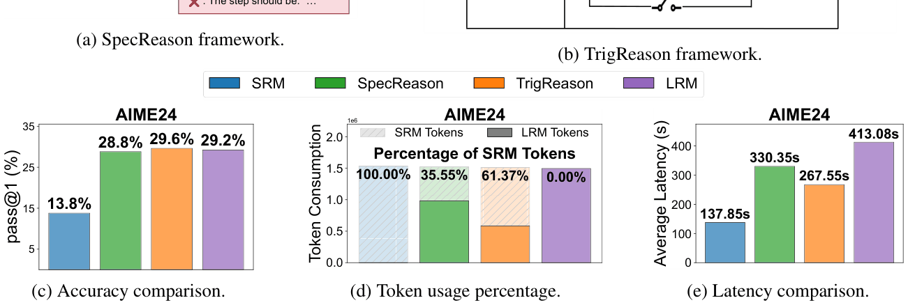
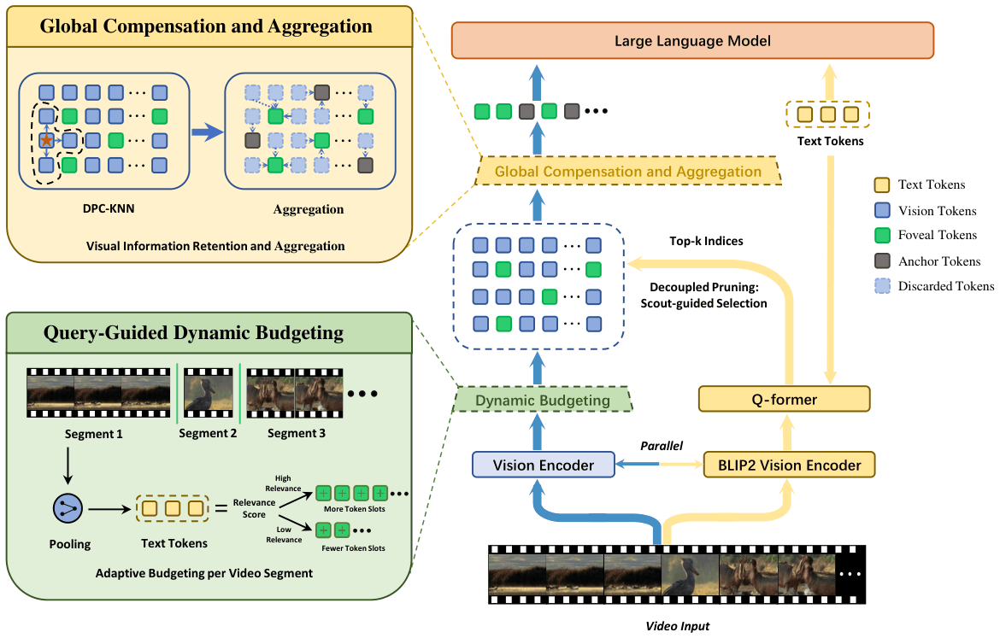
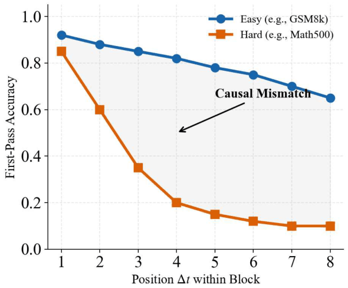
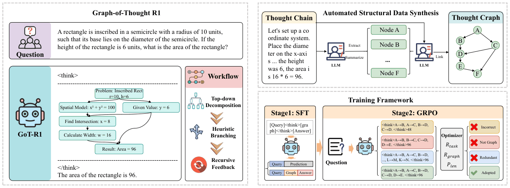
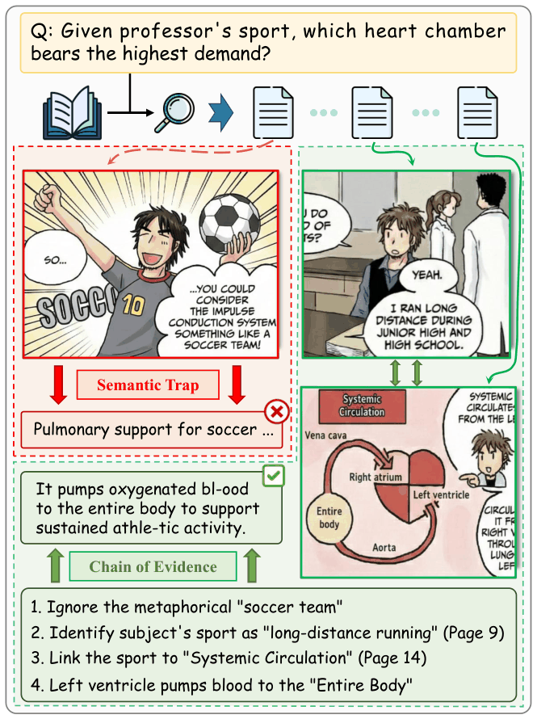
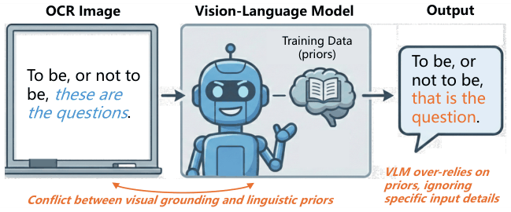
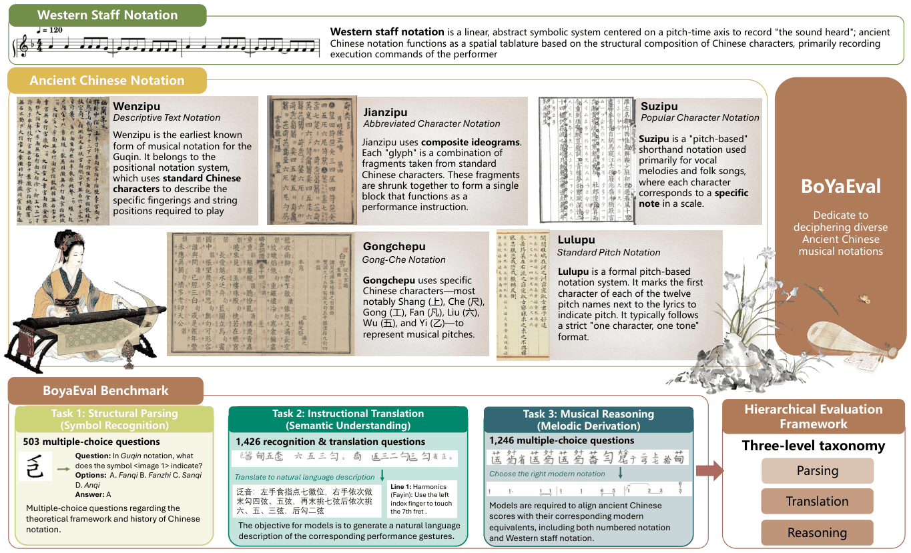
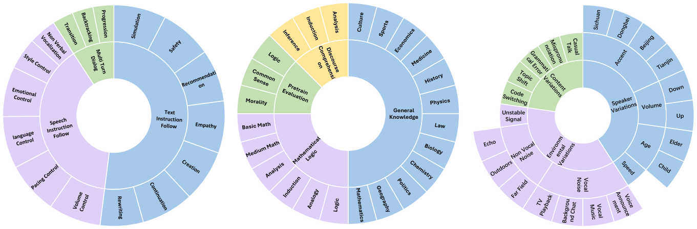

ACL 2026 (Annual Meeting of the Association for Computational Linguistics) has released its acceptance results, and 10 of our papers were accepted: 5 main-conference long papers and 5 Findings papers. The work spans three lines — the inference and generation efficiency of large models, generation and reasoning paradigms, and multimodal understanding and evaluation. Each paper is introduced below with its teaser figure and links to the PDF and to any released code, models or data. ACL 2026（Annual Meeting of the Association for Computational Linguistics）公布录用结果，我们有 10 篇论文入选，其中主会长文 5 篇、Findings 长文 5 篇。 这 10 篇工作分布在三条线上：大模型的推理与生成效率、生成与推理范式、多模态理解与评测。 下面按方向逐篇介绍，每篇配一张主图，并给出论文 PDF 与已开源的代码／模型入口。
01Inference Efficiency & Acceleration推理效率与加速
These four papers attack the same question from four angles: how to bring inference cost down without giving up quality. The entry points are the draft quality of speculative decoding, the expert-activation budget of sparse MoE, the timing of collaboration between small and large models, and visual-token redundancy in long videos.
这一组工作都在同一个问题上找切口：怎样在尽量不损失效果的前提下把推理成本压下来。切入点分别是投机解码的草稿质量、稀疏 MoE 的专家激活预算、大小模型协同时机的选择，以及长视频里的视觉 token 冗余。

RACER: Retrieval-Augmented Contextual Rapid Speculative Decoding
检索增强的上下文快速投机解码
Autoregressive decoding in large language models emits one token per step, which keeps inference latency high. Speculative decoding mitigates this with a guess-and-verify strategy, but the training-free variants each have a weak spot: retrieval-based drafts break down when no exact match exists, while logits-based drafts lack structural guidance.
RACER unifies the two — retrieved exact patterns act as reliable anchors and logit-driven future cues provide flexible extrapolation, producing richer speculative drafts with no training at all. On Spec-Bench, HumanEval and MGSM-ZH, RACER accelerates consistently, achieving more than 2× speedup over autoregressive decoding and outperforming prior training-free methods: a plug-and-play accelerator for LLM decoding.
大模型自回归解码一次只吐一个 token，推理延迟居高不下。投机解码用“先猜后验”来缓解，但免训练的几类变体各有短板：基于检索的草稿一旦没有精确匹配就失效，基于 logits 的草稿则缺少结构引导。
RACER 把两条路合起来——把检索到的精确模式当作可靠锚点，把 logits 驱动的未来线索当作灵活外推，从而得到更丰富的投机草稿，全过程不需要训练。在 Spec-Bench、HumanEval、MGSM-ZH 上，RACER 稳定加速，相比自回归解码取得 2 倍以上提速，并优于此前的免训练方法，是一个可即插即用的解码加速方案。

Faster MoE LLM Inference for Extremely Large Models
面向超大规模模型的快速 MoE 推理
In fine-grained sparse Mixture-of-Experts models, a large pool of specialized experts replaces a small homogeneous set, so quality and throughput become governed by how many experts are activated at inference time. Yet most existing optimization recipes implicitly assume a fixed activation budget — a constant Top-k per layer — and how that assumption behaves in fine-grained MoEs was poorly understood.
The paper first characterizes two runtime skipping strategies, uniform fixed activation and search-derived static layer-wise Top-k allocation, quantifying their accuracy–efficiency trade-off. It then proposes ASET (Adaptive Skipping with Entropy-Penalized Thresholding), which adapts activation at the token level using router confidence and entropy while never exceeding the model’s original budget — all training-free.
Static skipping alone already yields 10–78% throughput gains with minimal performance degradation, including ≥10% on DeepSeek-V3 without measurable loss. On the OLMoE testbed, ASET traces a Pareto frontier between average activation and task quality: adaptive activation fills the gap when fixed budgets are too rigid.
细粒度稀疏 MoE 用一大批专门化专家替代少量同质专家，模型的质量与吞吐因此由“推理时激活了多少专家”决定。但现有优化方案几乎都默认每层用固定的激活预算（常数的 Top-k），这个假设在细粒度 MoE 上是否成立，此前缺少系统认识。
论文先刻画两类运行时跳过策略——均匀固定激活、以及通过搜索得到的静态分层 Top-k 分配，量化它们的精度—效率权衡；再提出 ASET（Adaptive Skipping with Entropy-Penalized Thresholding），用路由置信度与熵做 token 级别的自适应激活，且始终不突破模型原有预算，全程免训练。
结果显示，光是静态跳过就能带来 10–78% 的吞吐提升且性能损失很小，其中 DeepSeek-V3 提升 10% 以上而没有可测量的损失；在 OLMoE 测试平台上，ASET 在平均激活量与任务质量之间给出了 Pareto 前沿——当固定预算过于僵硬时，自适应激活能补上这一块。

TrigReason: Trigger-Based Collaboration between Small and Large Reasoning Models
基于触发机制的大小推理模型协同
Large reasoning models achieve strong performance through extended chains of thought, but pay for it with the latency of autoregressive reasoning. Delegating to a small reasoning model is the common remedy, and the key is to state clearly where the small model’s capability boundary lies. The paper characterizes three risks: path divergence — the small model lacks the strategic ability to construct an initial plan, so reasoning deviates from the most probable path from the outset; cognitive overload — it fails on particularly difficult steps; and recovery inability — it lacks robust self-reflection and error correction.
Against these risks, TrigReason replaces continuous polling with selective intervention: the great majority of reasoning steps go to the small model, and the large model is called in only at three moments — initial strategic planning (strategic priming), upon detecting extraordinary overconfidence (cognitive offload), and when reasoning falls into unproductive loops (intervention request).
On AIME24, AIME25 and GPQA-D, TrigReason matches the accuracy of a full large model and of SpecReason while offloading 1.70×–4.79× more reasoning steps to the small model; under edge–cloud conditions it cuts latency by 43.9% and API cost by 73.3%.
大推理模型靠长思维链取得强性能，代价是自回归推理的延迟。用小推理模型分担是常见思路，关键是说清小模型的能力边界在哪里。论文系统刻画了三类常见风险：路径发散——小模型缺乏初始战略规划能力，推理一开始就偏离最可能的路径；认知过载——遇到特别难的步骤解不出来；无法恢复——缺少稳健的自反思与纠错机制。
针对这三类风险，TrigReason 用“按需触发”替代“持续轮询”：绝大多数推理步交给小模型，只在三个时刻请大模型介入——初始战略规划时（strategic priming）、检测到异常过度自信时（cognitive offload）、推理陷入无效循环时（intervention request）。
在 AIME24、AIME25 与 GPQA-D 上，TrigReason 的准确率与全量大模型以及 SpecReason 相当，同时多卸载 1.70×–4.79× 的推理步给小模型；在端云协同条件下，延迟降低 43.9%、API 成本降低 73.3%。

Vista-LLM: Decoupled Query-Guided Visual Token Pruning for Efficient Long-Video Large Language Models
解耦式查询引导的视觉令牌剪枝，面向高效长视频理解
The bottleneck of long-video understanding is the sheer number of visual tokens. Existing reduction strategies either rely on static budget allocation or select tokens inside the network’s attention computation, which disrupts already-optimized attention kernels and is hard to reconcile with fast implementations such as Flash Attention.
Vista-LLM filters redundancy ahead of inference and prunes visual tokens in a decoupled, query-guided way: overhead is minimal and it stays fully compatible with Flash Attention. The pipeline is coarse-to-fine in three steps — Query-Guided Dynamic Budgeting for adaptive allocation along the temporal axis, a lightweight Semantic Scout for fine-grained query-specific selection, and Structure-Aware Compensation to preserve global context so that pruning does not leave only local evidence behind.
On benchmarks such as Video-MME and MLVU, Vista-LLM pushes the accuracy–efficiency Pareto frontier forward markedly: on LLaVA-OneVision it reduces visual tokens by 90% and speeds up inference while retaining more than 98% of baseline performance on average.
长视频理解的瓶颈是视觉 token 太多。现有的缩减策略要么依赖静态分配预算，要么在网络的注意力计算内部做选择，破坏了已经优化好的注意力算子，和 Flash Attention 这类加速实现难以兼容。
Vista-LLM 把冗余过滤前移到推理之前，以解耦的方式做查询引导的视觉 token 剪枝：开销极小，且完全兼容 Flash Attention。整条流程由粗到细分三步——查询引导的动态预算负责时间维度上的自适应分配，轻量 Semantic Scout 做查询相关的细粒度挑选，结构感知补偿则尽量保住全局上下文，避免剪完只见局部。
在 Video-MME、MLVU 等基准上，Vista-LLM 把精度—效率的 Pareto 前沿明显前推：以 LLaVA-OneVision 为例，视觉 token 减少 90%，推理随之加速，而平均仍保留基线 98% 以上的性能。
02Generation & Reasoning Paradigms生成与推理范式
This pair asks how a model actually thinks and generates. One paper migrates an already-trained autoregressive model smoothly into diffusion-style parallel generation; the other replaces linear chain-of-thought with a structured reasoning graph, turning “thinking” from verbose narration into a topology of units.
这一组关心“模型究竟怎么想、怎么生成”。一篇尝试把已经训好的自回归模型平滑迁移到扩散式的并行生成；另一篇则把线性的思维链换成结构化的推理图，让模型的“思考”从冗长叙述变成有拓扑的单元组合。

From AR to Diffusion: Efficiently Adapting Large Language Models with Strictly Causal and Elastic Horizons
从自回归到扩散：以严格因果对齐与弹性视界高效适配大语言模型
Diffusion models can generate a whole passage in parallel, but they rely on bidirectional attention, which does not match the structure of pre-trained autoregressive models. That mismatch means the priors an AR model has already learned cannot be reused and one is forced into prohibitive pre-training from scratch.
FLUID removes the mismatch. Through Strictly Causal Alignment, a diffusion model can be initialized directly from standard GPT-style checkpoints, bypassing large-scale pre-training; Elastic Horizons then modulates denoising strides dynamically according to local information density rather than following a fixed schedule — more steps where information is dense, skipping ahead where it is sparse.
FLUID reaches state-of-the-art performance while reducing training cost by orders of magnitude, connecting a mature autoregressive foundation with efficient parallel generation.
扩散模型能一次并行生成整段文本，但它依赖双向注意力，与预训练自回归模型的结构不匹配。这个错配意味着无法复用自回归模型辛苦学来的先验，只能从零预训练，代价高到难以承受。
FLUID 的做法是把这层错配消掉：通过“严格因果对齐”（Strictly Causal Alignment），扩散模型可以直接从标准的 GPT 式检查点初始化，绕开大规模预训练；同时引入“弹性视界”（Elastic Horizons），按局部信息密度动态调节去噪步幅，而不是沿用固定调度——信息密的地方多算几步，稀疏的地方直接跨过去。
结果是 FLUID 在取得当前最好效果的同时，把训练成本降低了数个数量级，把成熟的自回归基础与高效的并行生成接在了一起。

GoT-R1: Internalizing Graph-of-Thought via Structural Reinforcement for High-Density Reasoning
以结构化强化内化思维图，实现高密度推理
Chain-of-thought is effective, but it has a mechanism-level flaw: linearity induces overthinking. Constrained by sequential generation, models often produce redundant narration and circular self-corrections to maintain logical context, spending tokens on narration rather than on reasoning.
GoT-R1 replaces verbose linear trajectories with high-density reasoning graphs, decoupling logic from narration and modeling deliberation as a structured topology of atomic units. To make the model genuinely internalize this inductive bias, the paper uses a two-stage regimen: synthesizing structural data to distill logical skeletons, followed by GRPO to explicitly reinforce topological integrity.
On mathematical reasoning and instruction following, GoT-R1 consistently outperforms state-of-the-art baselines while using significantly fewer tokens — evidence that structured reasoning density is a more robust and more parsimonious route than the recursive verbosity of chain-of-thought.
思维链很有效，但有一个机制层面的缺陷：线性结构会诱发“过度思考”。受限于顺序生成，模型为了维持逻辑上下文，常常产出冗余叙述和循环式的自我纠正，token 花在了叙述上而不是推理上。
GoT-R1 用高密度的推理图替代冗长的线性轨迹，把逻辑与叙述解耦，将思考过程建模为原子单元构成的结构化拓扑。为了让模型真正内化这一归纳偏置，论文采用两阶段训练：先合成结构数据蒸馏出逻辑骨架，再用 GRPO 显式强化拓扑完整性。
在数学推理与指令遵循任务上，GoT-R1 持续优于现有最好基线，而且 token 开销显著更低——说明相较于思维链的递归冗长，“结构化推理密度”是一条更稳健也更省的路线。
03Multimodal Understanding & Evaluation多模态理解与评测
This group faces three real scenarios: book-level long-document question answering, OCR models that “recite” rather than “read”, and two domains — ancient musical scores and Chinese speech dialogue — that have been short of benchmarks.
这一组面对三类真实场景：整本书级别的长文档问答、高精度 OCR 里“背”而不是“读”的模型、以及古乐谱与中文语音对话这两个缺少基准的领域。

TRACE: Traversal Retrieval-Augmented Chain of Evidence for Document Understanding
遍历式检索增强的证据链，面向文档理解
Early DocVQA methods for long documents either struggle to preserve visual semantics or are blocked by a finite context window. The RAG-style approaches that followed avoid the window limit, but because retrieval is passive and ignores logical dependencies between pages, they suffer from “semantic gaps” and “structural disconnections”.
TRACE turns retrieval into a walk over a bi-layered graph that encodes both physical adjacency and semantic relevance at once, upgrading retrieval from static matching into adaptive evidence-chain construction. The paper also proposes M5BookVQA, a benchmark built to assess deep multi-hop reasoning in books, filling a gap in existing datasets.
On M5BookVQA, TRACE improves average accuracy by 14.07%; it also generalizes with a 13.38% gain across four established benchmarks.
早期面向长文档的 DocVQA 方案，要么难以保住视觉语义，要么被有限的上下文窗口卡住；后来流行的 RAG 式方案虽然绕开了窗口限制，却因为检索是被动的、忽略页面之间的逻辑依赖，会出现“语义鸿沟”和“结构断裂”。
TRACE 把检索变成在“双层图”上行走——这张图同时编码物理相邻性（页序）与语义相关性，于是检索从静态匹配升级为自适应的证据链构建。论文同时提出 M5BookVQA 基准，专门评估书籍级长文档中的深度多跳推理，补上现有数据集在这方面的空白。
在 M5BookVQA 上，TRACE 平均准确率提升 14.07%；在四个既有基准上也取得 13.38% 的泛化增益。

PAR: Training-Free Positional Perturbation and Attention Recycling for Faithful OCR
免训练的位置扰动与注意力回收，实现忠实的 OCR
In high-precision settings, vision-language models fall into linguistic-priors hallucination: meeting familiar text, they over-rely on internal parametric knowledge and effectively “recite” the content instead of “reading” the image. The paper builds the GlitchText Probing Dataset to study this systematically, and finds that the model’s reliance on visual grounding drops significantly as the generation length grows.
PAR is a training-free, inference-time intervention in two parts: Positional Perturbation (PP) injects structured phase noise into the rotary positional embeddings to weaken positional prior inertia, while Foveal Attention Recycling (FAR) detects over-confident linguistic priors and dynamically redistributes attention mass back to important visual regions, making the model look at the image again.
Across several state-of-the-art models, PAR cuts hallucination rates sharply (reducing CER by 12%), most visibly in long-context scenarios, while maintaining robust generalization on standard benchmarks.
在高精度场景下，视觉语言模型会出现“语言先验幻觉”：遇到熟悉的文本时，模型过度依赖内部参数知识，等于在“背”内容而不是在“读”图像。论文为此构建了 GlitchText 探测数据集做系统研究，发现随着生成长度增加，模型对视觉依据的依赖会显著下降。
PAR 是一个免训练、只在推理阶段介入的方案，由两部分组成：位置扰动（PP）向旋转位置编码注入结构化相位噪声，削弱位置上的先验惯性；中央凹注意力回收（FAR）则检测过度自信的语言先验，把注意力质量动态重分配回关键视觉区域，让模型重新“看”图。
在多个前沿模型上，PAR 显著降低幻觉率（字符错误率 CER 降低 12%），长上下文场景尤为明显，同时在标准基准上保持稳健泛化。

BoYaEval: Evaluating Multimodal Large Language Models on Understanding Ancient Chinese Musical Scores
评测多模态大模型对中国古乐谱的理解
Multimodal large language models already perform well on general tasks but clearly struggle with specialized, structured cultural symbols. BoYaEval is the first comprehensive benchmark dedicated to ancient Chinese musical notation, covering five notation systems that encode pitch and intricate playing techniques through distinctive spatial layouts and specialized ideograms — a very different problem from everyday image understanding.
The benchmark contains 3,175 high-quality images and defines three tiers of evaluation: Structural Parsing (symbol recognition), Instructional Translation (technique mapping) and Musical Reasoning (melody derivation) — from “seeing the character” all the way to “playing the tune”.
The paper evaluates 21 leading MLLMs. Basic recognition is adequate, but cross-system compositional logic fails broadly, with reasoning tasks averaging only about 27%. The contribution is to connect ancient wisdom with modern AI and to supply a measurable evaluation step for digitizing intangible cultural heritage.
多模态大模型在通用任务上表现已经不错，但面对专门化、结构化的文化符号就明显吃力。BoYaEval 是第一个面向中国古代乐谱的综合基准，覆盖五类古乐谱字系统——这些系统用独特的空间布局和专门的表意符号来编码音高与复杂演奏技法，和日常图像理解的路数完全不同。
基准包含 3,175 张高质量图像，并设计了三个层次的评测：结构解析（符号识别）、指法转译（技法映射）、乐理推理（旋律推导），从“看到字”一直考到“弹出曲”。
论文评测了 21 个主流多模态大模型。结果是基础识别尚可，但跨系统的组合逻辑普遍失败，乐理推理任务平均分只有约 27%。这项工作的意义在于把古代智慧与现代 AI 接起来，为非物质文化遗产的数字化补上了可测量的评测环节。

VCB Bench: An Evaluation Benchmark for Audio-Grounded Large Language Model Conversational Agents
面向音频接地的语音对话智能体评测基准
Large audio language models have driven rapid progress in multimodal conversational systems, but current benchmarks suffer from critical limitations: they are largely English-centric, they use synthetic speech, and they fail to provide comprehensive, discriminative evaluation across key dimensions.
VCB Bench (Voice Chat Bot Bench) is a high-quality Chinese benchmark built exclusively on real human speech. It assesses these models along three complementary axes: instruction following (including speech-level control beyond text commands), knowledge understanding (general knowledge, reasoning and daily dialogue), and robustness (stability under variation in content, environment and speaker characteristics).
Experiments on representative audio language models reveal notable performance disparities and offer tangible leads for improvement; the benchmark itself is reproducible and fine-grained, providing a standardized basis for developing Chinese voice conversational models.
大型音频语言模型推动多模态对话系统快速进步，但现有基准有三个突出问题：以英语为主、使用合成语音、以及在关键维度上缺少全面且有区分度的评测。
VCB Bench（Voice Chat Bot Bench）是仅基于真实人声构建的中文高质量基准，从三个互补维度评测这类模型：指令遵循（包括超出文本命令的语音层面控制）、知识理解（通用知识、推理与日常对话）、鲁棒性（在内容、环境与说话人特征变化下的稳定性）。
论文在代表性音频语言模型上做了评测，揭示出明显的性能差异，并为后续改进提供了具体线索；基准本身可复现、粒度细，为中文语音对话模型的研发提供了标准化的评测依据。
The paper list is maintained on the Publications page · ← Back to News 论文清单同步维护在 Publications 页 · ← 返回 News